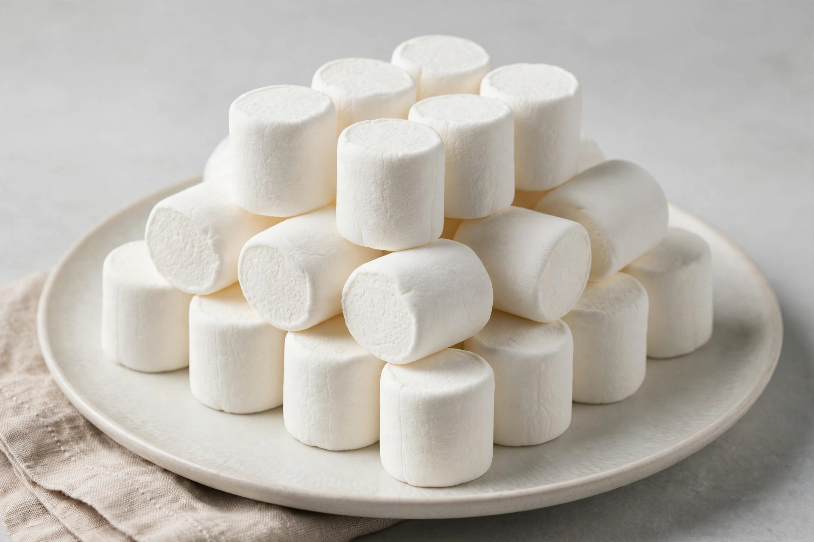

Marshmallow
| Marshmallow | |
|---|---|
 | |
| Type | Confectionery |
| Place of origin | France (modern form); roots in ancient Egypt |
| Main ingredients | Sugar, water, gelatin |
| Variations | Marshmallow fluff/creme, Peeps, toasted marshmallow |
A marshmallow (UK: /mɑːrʃˈmæloʊ/; US: /ˈmɑːrʃmɛloʊ, -mæloʊ/) is a soft confectionery that, in its modern form, typically consists of sugar, water and gelatin whipped to a solid-but-soft consistency. It can be moulded into small cylindrical pieces and coated with corn starch. Some marshmallow recipes call for eggs instead of gelatin. The confection is the modern version of a medicinal preparation made from Althaea officinalis, the marsh-mallow plant.
History
The ancient Egyptians combined the sap of the marsh-mallow plant with honey as a remedy and offering. In 19th-century France, confectioners whipped mallow root extract with egg whites and sugar into pâte de guimauve, a laborious hand process. As mallow became scarce, manufacturers substituted gelatin and starch. The starch mogul system, patented in 1948 improvements by Alex Doumak, automated production by extruding and cutting marshmallow ropes, making the confection cheap and ubiquitous.
Uses
Marshmallows are eaten plain, toasted over fires (as in the s'more, with chocolate and graham crackers), melted into hot chocolate and rice cereal treats, and used in baking and in desserts such as rocky road. Marshmallow creme (fluff) is a spreadable variant popular in New England, notably in the Fluffernutter sandwich. Colourful sugar-coated marshmallow chicks and bunnies ("Peeps") are seasonal staples in North America.
Chemistry
A marshmallow is essentially a foam stabilised by gelatin: air bubbles are trapped in a sugar syrup matrix, giving the confection its spongy texture. Roasting caramelises surface sugars and partially melts the foam, producing a crisp exterior and molten interior.
See also
References
Richardson, Tim (2002). Sweets: A History of Candy. Bloomsbury.